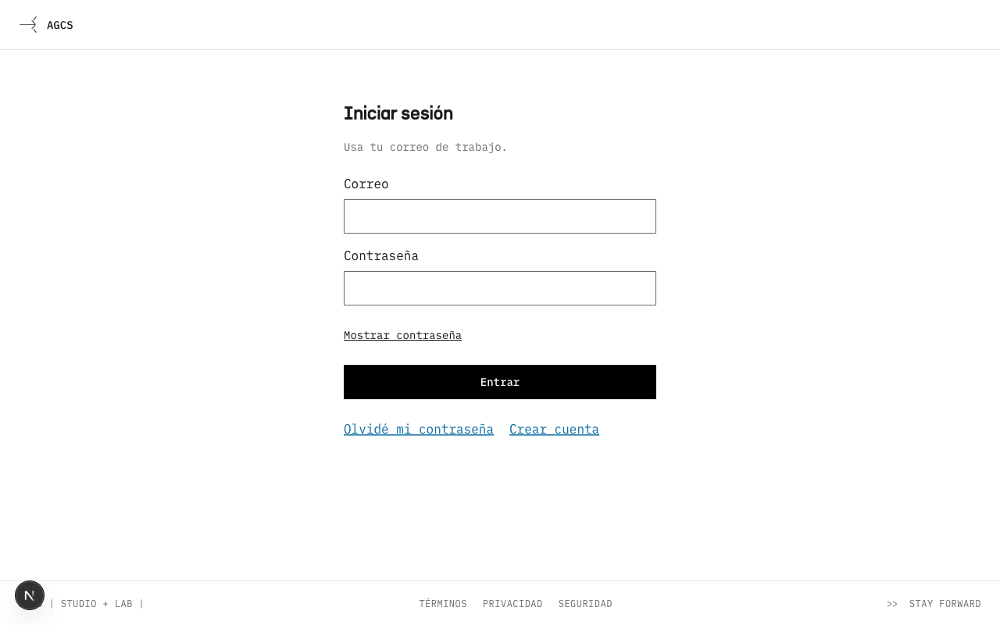
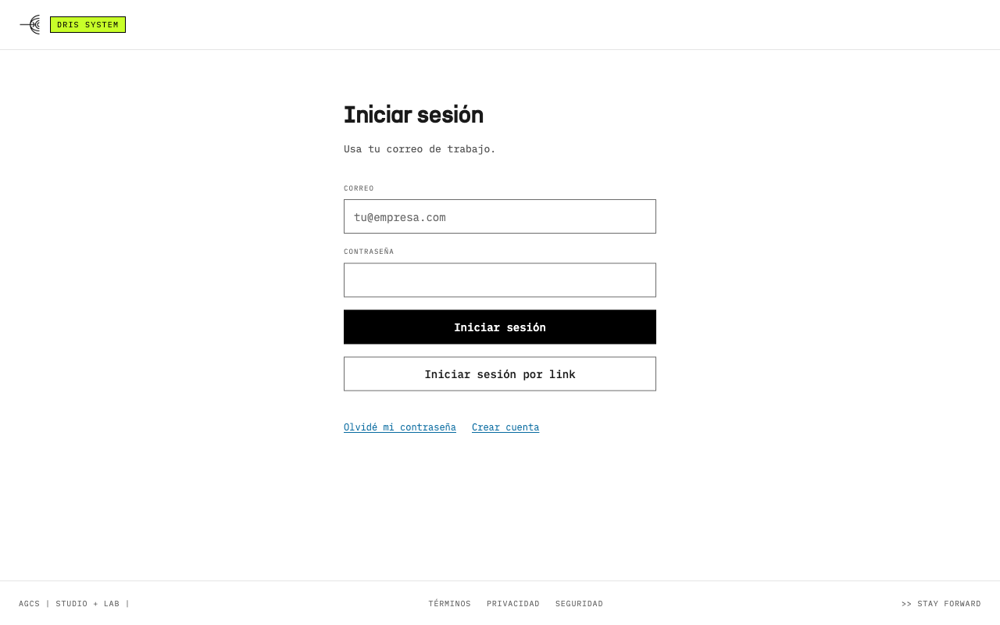
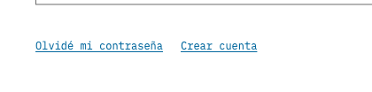
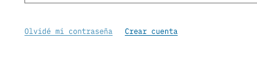
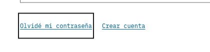

Enlaces
En tinta, con el lime de AGCS en hover y foco
Alcance: design system, después las dos apps. El estilo nace en agcs-ui como ui/link.css (clase agcs-link) y tres roles en tokens/colors.css. Management y DRIs copian los dos archivos y cambian sus enlaces a la clase, como se hizo con el menú y el disclosure.
Hoy
Los enlaces salen azules de un solo lugar: el rol --text-link de agcs-ui, que la clase text-link usa 42 veces en management y 8 en DRIs (una de ellas es AUTH_LINK, que usan las cuatro páginas de acceso). Sobre blanco es #05699F; sobre negro, #00A1F1. En hover, management no cambia nada y DRIs baja la opacidad a 0.7.





Propuesta · modo claro
En reposo, tinta y subrayado: el subrayado es lo que distingue al enlace del texto, así que nunca se quita. En hover, una banda lime detrás de la línea del texto, con el texto en tinta, como el número seleccionado de la evaluación (D2 del plan del 10.10). El foco es el mismo hover más el outline de 2 px de las apps.
Según el informe de consumo 2026 de la Cámara de Comercio, la demanda crece en tiendas de cercanía.
Según el informe de consumo 2026 de la Cámara de Comercio, la demanda crece en tiendas de cercanía.
Según el informe de consumo 2026 de la Cámara de Comercio, la demanda crece en tiendas de cercanía.
No se pudo cargar tu preferencia.
No se pudo cargar tu preferencia.
No se pudo cargar tu preferencia.
Propuesta · modo oscuro
Las dos apps usan el modo oscuro en paneles (data-mode="dark"): el panel de bienvenida del registro, «Siguiente paso» en el inicio, el encabezado de Pulse. Sobre negro el lime se lee como texto, así que no lleva banda: el texto y el subrayado pasan a lime.
Panel oscuro
Revisa el informe de consumo 2026 de la Cámara de Comercio antes de decidir.
Revisa el informe de consumo 2026 de la Cámara de Comercio antes de decidir.
Revisa el informe de consumo 2026 de la Cámara de Comercio antes de decidir.
Banda o bloque
Muchos enlaces tienen 44 px de alto para el dedo. Si el lime pinta toda la caja, el hover es un bloque de 44 px; la banda pinta solo la línea del texto. Propongo la banda.
A · Banda detrás del texto (propuesta)
Mismo tamaño en un enlace suelto y en uno dentro de un párrafo. En un enlace de dos líneas, cada línea lleva su banda.
B · Bloque en toda la caja
Se parece más a un botón que a un enlace, y el bloque cambia de alto según dónde esté el enlace.
Contraste
| Estado | Texto sobre fondo | WCAG | APCA |
|---|---|---|---|
| Reposo, claro | Tinta #1A1A1A sobre blanco | 17.4:1 | 104 |
| Hover y foco, claro | Negro sobre lime #C8FF29 | 17.8:1 | 95 |
| Reposo, oscuro | Blanco sobre negro | 21.0:1 | 108 |
| Hover y foco, oscuro | Lime sobre negro · sobre carbón #1A1A1A | 17.8:1 · 14.7:1 | 96 · 94 |
| Outline de foco | Tinta sobre blanco · blanco sobre negro | 17.4:1 · 21.0:1 | — |
| Por qué no lime como texto en claro | Lime sobre blanco | 1.2:1 | 8 |
Todo pasa AA (4.5:1 para texto, 3:1 para el outline). Como el enlace en reposo tiene el color del texto, el subrayado es la señal que no depende del color (WCAG 1.4.1).
Regla del lime
CLAUDE.md de las dos apps: «uno por grupo, tres por pantalla, siempre con una marca negra; nada que se repita por fila o tarjeta va en lime».
- En reposo ningún enlace es lime. Una tabla o una lista con un enlace por fila sigue en tinta: no hay lime repetido por fila.
- El lime aparece en un solo enlace a la vez, el que está bajo el mouse o con el foco, y se va al salir. No suma un lime fijo a ningún grupo.
- En claro lleva su marca negra: texto y subrayado en negro sobre la banda. En oscuro el lime va solo, como
--highlight-edgeen ese modo. - El hover no usa
opacity: 0.7ni inversión, las dos formas de hover de la regla 8 de agcs-ui. Es una tercera forma, solo para enlaces de texto: la regla 8 se actualiza enSKILL.md.
Qué cambia en cada repo
| Repo | Cambio |
|---|---|
| agcs-ui | ui/link.css nuevo. En tokens/colors.css, --text-link pasa a tinta y se suman --link-hover-bg y --link-hover-ink. Pruebas de contraste en check-palette, prueba del CSS, docs/color.md, SKILL.md, README y la tarjeta de estados. |
| management | Copia de los dos archivos. Los 42 usos de text-link, en 32 archivos, pasan a agcs-link, más la variante link del botón de shadcn. |
| DRIs | Copia de los dos archivos. Los 8 usos de text-link, en 6 archivos (con AUTH_LINK de las páginas de acceso), y la variante link del botón, que usa la alerta de insights. |
Tres enlaces de management están en archivos de PRs abiertos de la auditoría U5.1: foresights/page.tsx y present-forward-workspace.tsx (#292) y clients-manager.tsx (#296). Con el cambio del token dejan de ser azules sin tocar esos archivos; la clase agcs-link, con el hover lime, entra cuando esos PRs estén en dev. Los mensajes del sistema (text-info) siguen en azul: no son enlaces.
Decidido por Max (15.10.2026):
1. Banda (A).
2. Las acciones de texto subrayadas que ya estaban en tinta (Cancelar, Deshacer, Quitar, Saltar tutorial) llevan el mismo estilo: se ven igual que un enlace.